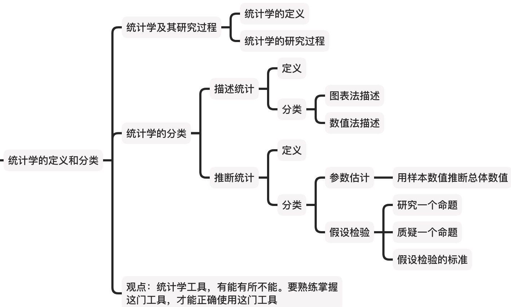
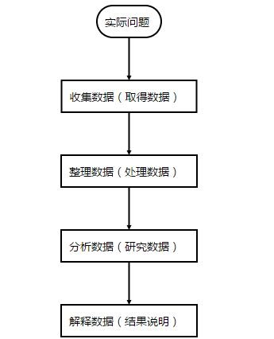
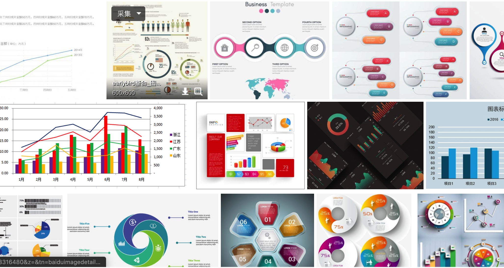

统计学及其分类
大家好 我是老乔 这里是超智星球的《超智·统计学》系列课程。
在前述文章中，我们讲了统计学研究不确定性，统计学主张一切用数据说话，我们还提到了统计学的各种陷阱，还讲到了学习统计学的数感、概率思维、计算思维、质疑思维，要讲数字与生活结合。
一切的一切都是铺垫。接下来，我将带领大家一起走进这个充满未知、谬论和假设的世界。
开门见山，明确学习目标。本节核心内容为： 
从问题说起
常常听到的一句话，好的科学论文解决一个科学问题，科学的诞生本身就和问题离不开。
老生常谈的就是像牛顿被苹果砸了之后，牛老师就想到一个问题，“为啥苹果会落到地上，而不飞上天和太阳肩并肩呢？”。。。。嗯，幽默一下。
统计学的应用普及也是离不开各种实际问题的。比如，科研中就有很多问题跟统计学相关。譬如：
- 人口研究当中，我们希望了解65岁以上老年人所占的比例，以便于我们更好地研究老龄化的问题。
- 从几个监测站点的汽车尾气监测推断今天北京市的汽车尾气排放是否达到大气污染物排放标准。
- 影响植物光合作用的因素是什么，各个因素的影响有多大？
统计学被广泛的应用于各个领域之上，从物理和社会科学，再到人文科学，甚至被用在工商业及ZF的情报决策当中，以及等等等。统计学应用领域十分广泛，这里就不细谈了。
统计学及其研究过程
那么统计学又是什么呢？
《应用统计学》：统计学是关于数据的科学，它所提供的是一套有关数据收集、处理、分析、解释并从数据中得出结论的方法，统计研究的是来自各领域的数据。数据收集也就是取得统计数据；数据处理是将数据用图表等形式展示出来；数据分析则是选择适当的统计方法研究数据，并从数据中提取有用信息进而得出结论。
《百度百科》：统计学是通过搜索、整理、分析、描述数据等手段，以达到推断所测对象的本质，甚至预测对象未来的一门综合性科学。统计学用到了大量的数学及其它学科的专业知识，其应用范围几乎覆盖了社会科学和自然科学的各个领域。
《不列颠百科全书》：Statistics: the science of collecting,analyzing, presenting, and interpreting data.
综合地说，统计学(Statistics)是收集、处理、分析、解释数据并从数据中得出结论的科学。
所以统计学的研究过程可以整体上分为5个步骤：
- 数据收集：取得数据
- 数据处理：整理与图表展示
- 数据分析：利用统计分析方法分析数据
- 数据解释：结果的说明
- 得到结论：从数据分析中得出客观结论。
总结起来，统计学的研究过程就像下面的流程图：

当然这里面很容易出问题的，是【解释数据】这个环节————我们很容易得出一些，在数学上有意义，但在现实中没有意义的结论。
比如太阳升起的时间与每个人起床时间相关性很高，但是我不能说因为每个人都起床了，所以太阳升起了。
统计学的分类
从前面提到的我们知道，统计方法是通过已知的观测数据去分析随机现象的数量规律。因此统计方法就包括了两大部分：描述统计与推断统计。
那么要怎样来区分它们呢？
我们先来了解描述统计学和推断统计学的概念：
描述统计学(descriptive statistics)是研究如何取得反映客观现象的数据,并通过图表形式对所搜集的数据进行加工处理和显示,进而通过综合概括与分析得出反映客观现象的规律性数量特征的一门学科。 （摘于百度百科）
推断统计学（inferential statistic）是研究如何根据样本数据去推断总体数量特征的方法，它是在对样本数据进行描述的基础上，对统计总体的未知数量特征做出以概率形式表述的推断。（摘于百度百科）
描述统计及其分类
描述统计是通过图表或数学方法，对数据资料进行整理、分析，并对数据的分布状态、数字特征和随机变量之间关系进行估计和描述的方法。
简单来说，描述统计就是用图表或者关键的数据简化一堆繁琐的数据。
描述统计描述了数据的基本情况，它们根据大量不直观的数据，通过分析和总结，希望得到有价值的信息。
描述统计就好像是使用卫星俯看地球，好像经济学中的宏观经济学，虽不能明察秋毫，却无可替代。
既然描述统计是用图表和关键数据来提供有效信息，那么它自然而然地可以分为【图表法描述】和【数值法描述】。
【图表法描述】实际上就是用不同的【图表】从不同的维度描述数据。
常用的有直方图、点图、矩阵图、累计频率图、雷达图、数据透视表等等。
以下的图均属于图表描述：

【数值法描述】实际上就是用不同的【数值】从不同的维度描述数据。
举个例子：假如你是一个小学校长，想了解学生们的身高情况，
如果有人给你一个表格文件，你会发现，一堆看了就眼晕的数据，真的很难让人理清关系，数据越多反而事实越模糊。
相比于详细了解"每个学生"的具体数据，你可能更想知道：
- "这批学生"身高总体上咋样（中心的度量）
- 最高个子学生和最矮个子的差多少(差值的度量)
- 本校学生和另一所学校的学生相比，谁的身高更整齐（分布形态的度量）
- 学生偏高的多还是偏矮的多（分布形态的度量）
- 身高在170~175cm的学生占多大比例（相对位置的度量）
这时候就需要描述统计学的数值描述出场了。数值法描述常使用的方法有：集中趋势分析，如平均数、中数、众数；离中趋势分析，如四分差、平均差、方差、标准差；相关分析，如正相关关系、负相关关系，等等。具体的统计量，我们后面章节还会讲。
推理统计及其分类
尽管描述统计很有用，但是它只能提供基本信息。
推理统计 (inferential statistics)是研究如何利用样本数据来推断总体特征的统计方法。
推理统计能对手中的数据进行延伸推论，并进一步给出推理性结论。
我们还是举一个栗子。
假设你买了一袋子水精灵，商家说一袋子有10000个：有粉的、白的、黄的、绿的、蓝的、红的......
如果你想知道每种颜色有多少个，你可以慢慢数，白一个、黄一个、白加一个、黄加一个、粉一个......
数的过程中，你可以记正字记下每种颜色分别累计有多少个了。等你数完，你最终会得到描述统计学的答案。
但是多数情况下，谁有那闲工夫。你会想，有没有简单的办法，可以更加轻松的知道每种颜色大概分别有多少？
这就用到【推理统计学】了。
如果浴缸里的水精灵混合均匀的话，并且你一把抓的也足够多，那么，你只需要抓一大把水精灵，就数抓出来的这些就行了。你可以根据
这种用“样本数值”估计“总体数值”的方法，叫做【参数估计】。
这类问题，在生活很有意义。比如：
- 要了解一个地区的人口特征，不可能对每个人的特征一一进行测量；
- 对产品的质量进行检验往往是破坏性的，也不可能对每个产品进行测量。
这就需要抽取部分个体即样本进行测量，然后根据获得的样本数据对所研究的总体特征进行推断，这就是参数估计要解决的问题。
除此之外，我们还用推理统计来完成更复杂的工作，可以让我们验证一个想法或者假设，我们称为【假设校验】。
假设检验的思想，可以用来推理我们想研究的问题。
例如，回答“在美国 30岁以下的人吃的快餐更多吗”这种问题，我们不需要让所有人都来回答这个问题，只需要做一下抽样调查，然后做统计推理。
当然了，研究出来的结果，可能是吃快餐和年龄没有显著关系；也可能是在一定置信度下，我们可以认为吃快餐和年龄有关系。结论就是，你不能得到吃快餐和年龄”一定“有关系。
假设检验，也可以用来检验别人的命题是否正确，防止掉入陷阱。
假设有人，说他们推出保健品"笨立停口服液"能提升你的IQ,你会跟风抢购吗?多数是不会的，毕竟口说无凭。
但如果他们告诉你，他们做了对照组实验：设置两个组，A组吃药，B组不吃药。A组的20人，吃了一个月笨立停后，平均智商为2个IQ；而B组的没有吃笨立停的20个人，平均智商只有1个IQ。
现在呢，开始动心了吧，对吧？当然了也会有人表示质疑，但未必能说出来质疑的原理。
但等你学完假设检验，你会知道，基于怎样的假设、使用怎样的数据、通过怎样的步骤，得到怎样的结果，我们才可以认为，两个样本的智商，因为"笨立停"而发生了变化。我们称之为假设检验的标准。
当然了，哪怕“笨立停”真的有用，但作为个体，你可以拒绝相信，也不要因为标杆的不同而大惊小怪。
此外，假设校验的严格性，在不同问题上标准也不同。这也是理所当然的。毕竟，“说服你买新款治癌药”比“说服你换一种猫粮”，要难得多。
事实上很多我们目前正规药房的一些新药物，投产之前都是做了非常严格的实验的。但依旧不能保证药品完全有效。
统计方法是通过已知的观测数据去分析随机现象的数量规律。它帮我们看清了不确定性，但没有排除不确定性。
你的工作就是排除不确定因素，获取有价值信息
如果统计学是超级英雄，那么他的绝招就是，拿不准 而他的口号就是“我会犯错 但不能不做”
统计学是工具
统计学是工具，像眼睛和耳朵能滤除外界无用的刺激，给我们呈现出最好的世界一样。
一方面，统计学为我们抽取这个世界有益的数据，帮助我们理解世界中的庞大信息：
- 描述统计学使我们能读懂数据（虽然失去了个体数据信息）
- 推理统计学让我们处理存在不确定性的数据（如笨立停是否能提高智商）
另一方面，但它不是万能的，它们是来帮忙的，不是来打工的。我们需要知道什么能做，什么不能做。
统计学作为工具，就像电锯，不理解其原理的话，不仅无用还可能有害。
这就是统计学。
呼应开头，巩固学习成果。本节核心内容为：
感谢收看，我们下次见!
参考文献： [1]装满水的恐怕.《如何进行统计分析》.知乎.2020. [2]Shaoqing Dai.《应用统计学与R语言实现学习笔记》.GISerDaiShaoqing's Blog.2017. [3]贾俊平,何晓群,金勇进.《统计学》(第七版).中国人民大学出版社.2018. [4]Crash Course,Crash Course Statistics,YoutuBe,2020.